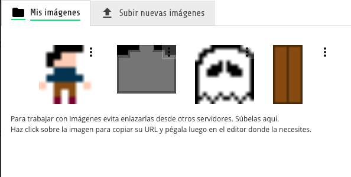
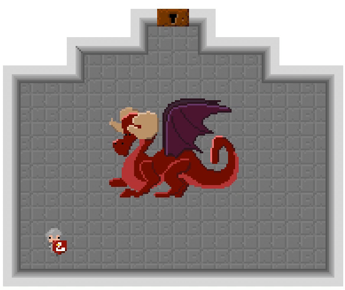
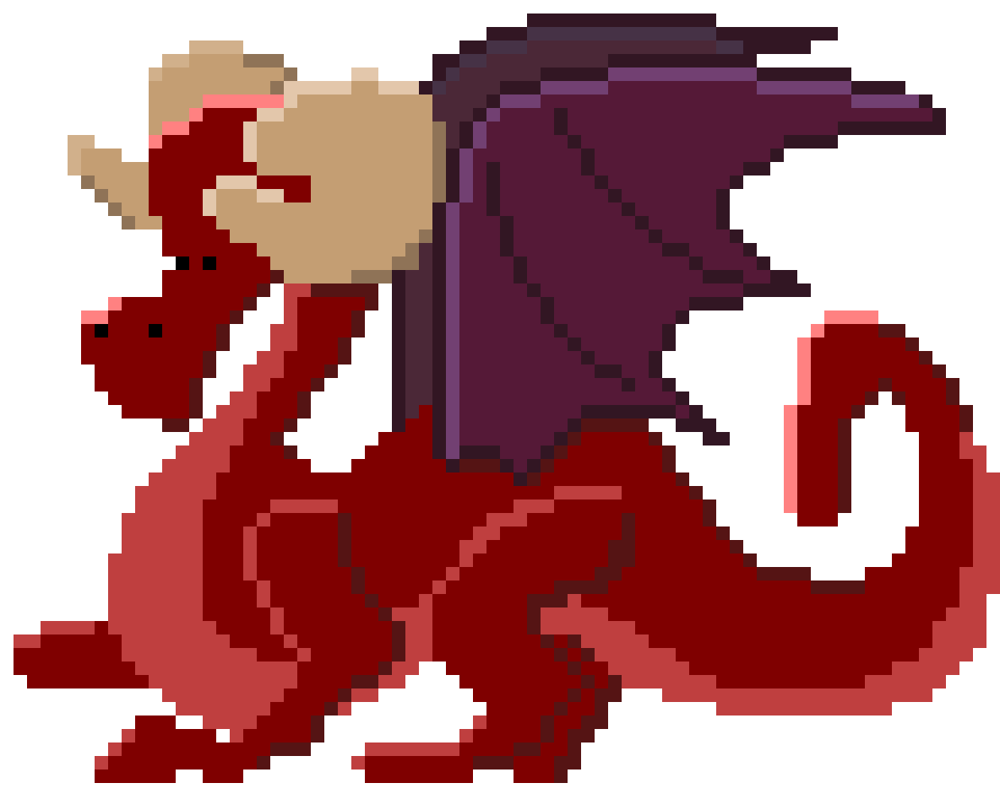
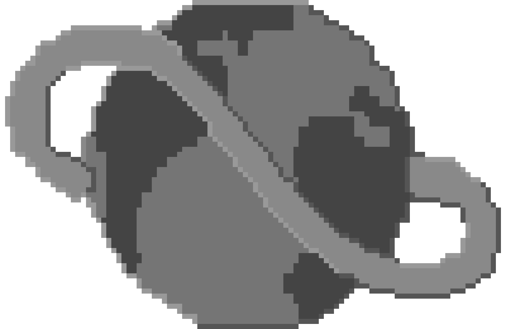
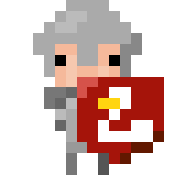
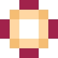
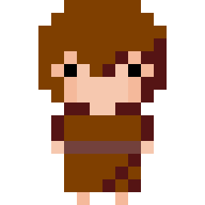
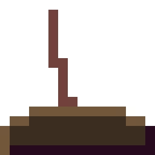
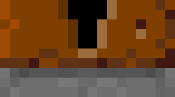
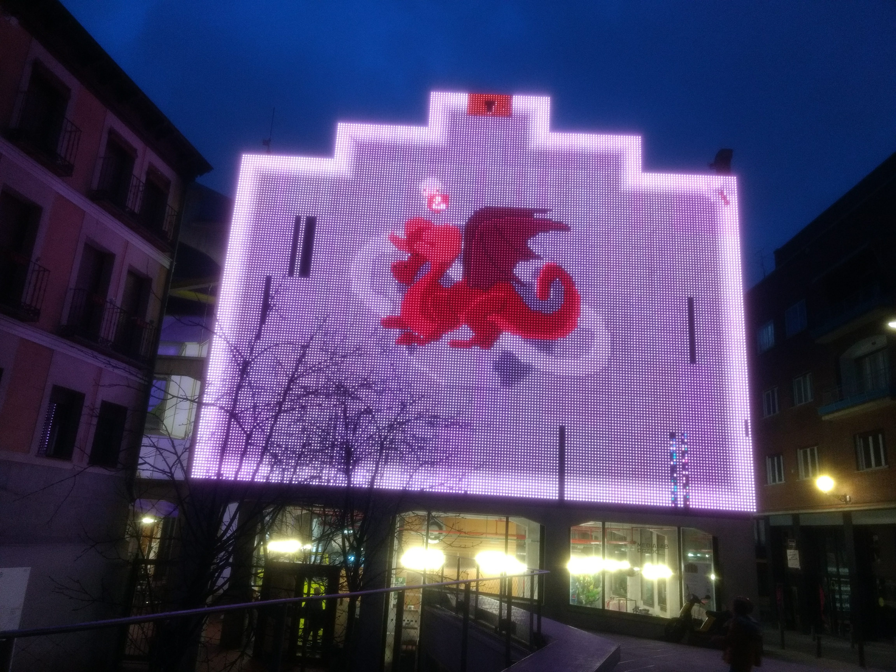

Carlos León
Created: 2024-01-30 mar 13:32
1. Contexto
1.1. GameJam 2020
Del 31 de enero al 2 de febrero de 2020, UCM es sede GameJam 2020 en Madrid
1.2. Medialab Prado
La GGJ UCM se organizó en Medialab Prado
1.3. Pantalla
Medialab Prado tiene una pantalla en la fachada exterior que se puede usar
https://www.medialab-prado.es/noticias/fachada-digital-informacion-tecnica-0
1.4. Dimensiones
- 15m \(\times\) 10m
- 192 \(\times\) 157 "píxeles" (enormes)

Figure 1: Diagrama de la pantalla
La pantalla sólo se ve bien de noche (está habilitada como de 18:30 a 23:30)
El tamaño de la plaza hace que se vea muy cerca, con lo que los píxeles inferiores se ven bastante mayores que los superiores
1.5. Sonido
No hay sonido (está en medio de la calle)
1.6. Cámaras
Hay un sistema CCTV que recoge la interacción de la gente en la plaza
Y un API de alto nivel de reconocimiento de personas
2. Programando la fachada
Tienen un PC con salida directa a la fachada, con lo que cualquier trozo imagen que quepa en 192 \(\times\) 157, se puede emitir
Esto requiere bastante gestión (aunque es posible)
2.1. Processing
Medialab Prado ofrece un API de alto nivel para programar la fachada y la cámara
Está basado en Processing
int y = 100;
void setup() {
size(640, 360);
stroke(255);
frameRate(30);
}
void draw() {
background(0);
y = y - 1;
if (y < 0) {
y = height;
}
line(0, y, width, y);
}
3. P5.js y JavaScript
Dado que Programa la plaza ofrece una plataforma web, se recomienda usar P5.js, que es Processing, pero con JavaScript
let y = 100;
function setup() {
createCanvas(720, 400);
stroke(255);
frameRate(30);
}
function draw() {
background(0);
y = y - 1;
if (y < 0) {
y = height;
}
line(0, y, width, y);
}
Hacer con JavaScript y P5.js es mucho más flexible (y está más mantenido)
4. Plataforma "Programa la plaza"
Desde http://programalaplaza.medialab-prado.es se puede crear una cuenta y empezar a programar directamente en el navegador
La plataforma no solo ofrece un editor, también ofrece un API
4.1. API seguimiento de personas (tracking)
function setup() {
api.tracking.connect();
}
function draw() {
var blobs = api.tracking.getBlobs();
for (var i = 0; i < blobs.length; i++) {
}
}
4.2. API de guardado
Datos que se almacenan durante el tiempo de muestra
api.storage.set('valor', 15);
// ...
valor = api.storage.get('valor');
4.3. Imágenes
Para usar imágenes (cualquier tipo soportado por P5.js), se suben a la plataforma y luego se referencian por la URL que nos da el sistema

Figure 2: Subir imágenes
5. Proxy
"Programa la Plaza" tiene un API para el reconocimiento de personas:
api.tracking.connect()
api.tracking.getBlobs()
Pero no podemos usarlo mientras desarrollamos
Para el desarrollo se creó un proxy del API que usa el ratón como sustituto de la cámara
Se crea un array (api.tracking.blobs) y, cada vez que se arrastra por pantalla (que simula a la cámara), metemos más elementos en el array
Este array simula los "blobs" que nos ofrece el API
Usamos mouseDragged() P5.js para recibir la entrada de ratón y cambiar al array:
function mouseDragged() {
if (overBox > released) {
const found = api.tracking.blobs.find(blob =>
blob.id === overBox)
if (found) {
found.x = mouseX
found.y = mouseY
}
}
}
Después, exportamos nuestro propio objeto api
const api = {
// ...
tracking: {
connect: function () { },
getBlobs: function () {
return JSON.parse(JSON.stringify(api.tracking.blobs))
},
blobs: []
}
}
Como hemos llamado igual a nuestro API, sólo tenemos que subir el código (sin nuestro API proxy), y funcionará
6. El juego

Figure 3: El juego
En el juego, los jugadores sólo se mueven por la plaza (es la única entrada)
La cámara los reconoce, y nos ofrece posiciones de cada jugador \((x, y)\), a esto le llama blob
Cuando un blob cambia, primero vemos si es alguno que ya estaba o es nuevo (porque la API sólo nos dice el id del blob)
Se probó con id y con posicion, y por id funcionaba mejor
Con la posición, generamos enemigos (fantasmas), puertas y palancas
Las puertas se abren según el tipo de habitación:
- Solas (están abiertas)
- Cuando se derrota a todos los enemigos
- Cuando se activa una palanca
Hay 2 tipos de personajes:
- Guerreros (atacan "cuerpo a cuerpo")
- Magos (disparan bolas de fuego)
Como no hay más entrada que la posición, disparan solos cada cierto tiempo
Los personajes no mueren, no hay desafío real
Pero no es necesario, ya que la gente juega porque está en la calle, y por el avance en el juego
6.1. Generación de habitaciones
La generación de habitaciones es aleatoria
Para no tener que llevar el control del mapa, evitamos que se vuelva a atrás, no hay puertas ni hacia abajo ni por donde hemos venido
6.2. El dragón
A partir de cierto número de habitaciones, hay probabilidad de que aparezca el dragón
Cuando el dragón muere (necesita varios golpes)
6.3. Desafíos de programación
El juego se hizo en P5.js, que es mucho menos potente que Phaser
6.3.1. Animaciones
actualizar() {
super.actualizar()
this.tiempoAnimacion += delta()
if (this.tiempoAnimacion >= this.animacion.periodo) {
this.tiempoAnimacion = 0
const l = this.animacion.fotogramas.length
if (this.fotograma === l - 1) {
if (this.animacion.terminada && !this.terminadaLlamada) {
this.animacion.terminada(this)
this.terminadaLlamada = true
}
if (this.animacion.vuelta) {
this.establecerFotograma()
}
} else {
this.establecerFotograma(this.fotograma + 1)
}
}
}
6.3.2. Colisiones
// `input` puede ser un objeto, o la `x`
solapa(input, y = undefined, w = undefined, h = undefined) {
const other = typeof input === 'number' ? { x: input, y, w, h } : input
return this.x < other.x + other.w &&
this.x + this.w > other.x &&
this.y < other.y + other.h &&
this.h + this.y > other.y
}
6.3.3. Movimiento a un punto
actualizar() {
super.actualizar()
if (this.vivo) {
if (dist(this.x, this.y, this.destino.x, this.destino.y) < Fantasma.tamano) {
this.nuevoDestino()
}
const v = Fantasma.velocidad / delta()
const angulo = atan2(this.destino.y - this.y, this.destino.x - this.x)
this.x += v * cos(angulo)
this.y += v * sin(angulo)
}
}
7. Arte
Todo el juego se dibujó con arte píxel porque la pantalla tiene muy pocos puntos, y muy grandes
Se animó frame a frame
El arte es original, pero basado en buena medida en otros recursos encontrados en Internet
Algunas imágenes se calcaron con cierta libertad y luego se pasaron a arte píxel
¡Gracias al prof. Guillermo Jiménez por los logos de la UCM y la Game Jam!
Figure 4: Logo UCM

Figure 5: Dragón

Figure 6: Logo GGJ

Figure 7: Guerrero

Figure 8: Magia

Figure 9: Mago

Figure 10: Palanca

Figure 11: Puerta
jugador
8. El juego
Todo está accesible en GitHub

Figure 12: Pantalla MLP con el juego